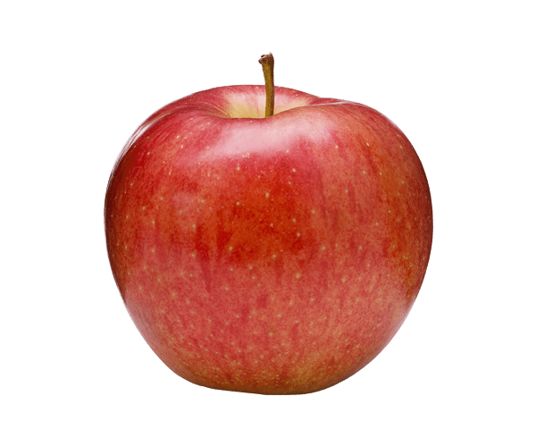
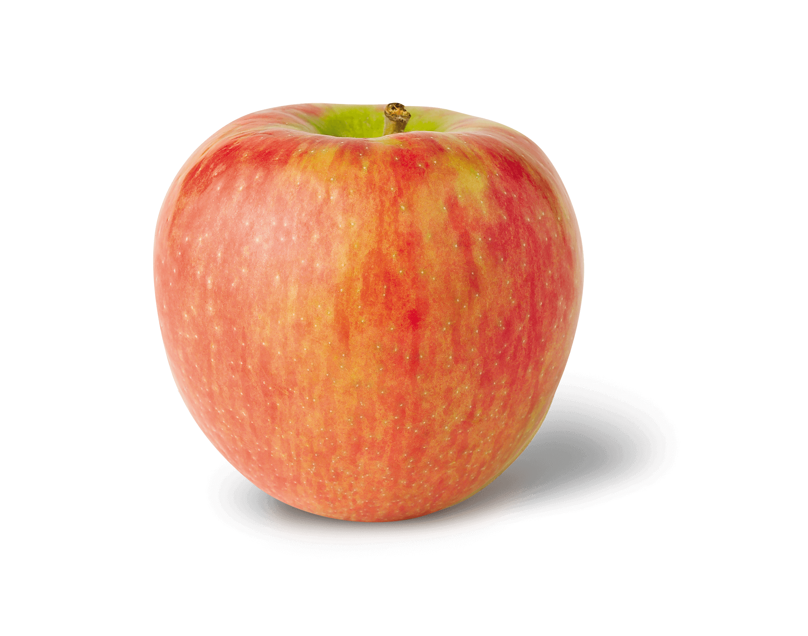
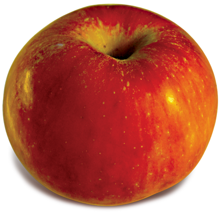
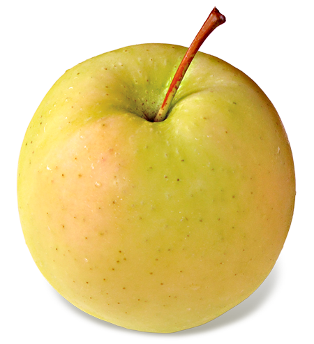

Apple Varieties

Gala
A sweet and crisp apple with red striping that's good for eating, baking, sauces, and salads.

Honeycrisp
A sweet, nutritious apple that can grow in a variety of climates, including Wisconsin.

Red Gravenstein
A sweet-tart apple with broad red stripes that's great for eating fresh, or for making into sauces or cider

Ginger Gold
An heirloom apple that ripens in early September
Cabin Treats
We offer a variety of fall treats in our cabin center. Try our special, homemade apple cider and donuts or chose from a variety of fall flavored jam, baked goods, and real maple syrup. Ask about our special fall and holiday items!